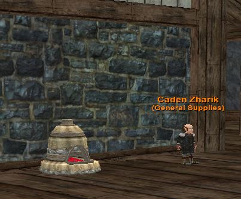

Astrial Weapon
Part One
Quest begins with Astrial Messenger found in the south wing of the Nexus. You will need 4 items for the initial quest. The items are not NO DROP.
-
Strongest Carapace- Shell of Lodizal (Looks like turtle shell) from Lodizal in Iceclad. Don't confuse this with Section of Lodizal's Shell. Not a guaranteed drop, so you may have to kill a few times.
-
Fire from the hottest forge- Everburning Flame Ground spawn behind King Tranix in Soldungb.
-
Piece of Living Rock- Beating Heart of Earth Drops from the Avatar of Earth in poearthb. This event is live so you must kill the 12 councilmen to spawn avatar of earth. Not a guaranteed drop, so you may have to kill a few times. The event is on a respawn timer of about 1 hour.
-
Piece of your soul in agony - you must die to the Avatar of Agony in Plane of Torment DO NOT DIE TO THE ADDS or you will not get credit! This mob has placeholders and the respawn is 30 minutes. This item is also No Trade!
Turn in the 4 items to Astrial in order to Astrial Messenger! Hail him/her to make sure what item is required before turning in!
NOTE: You can only possess ONE Astrial weapon. You cannot dual wield Astrials.
Part Two
Now the fun begins. The Astrial Messenger tells you to hand him: Dragon Sprit Core x 50, 1 Unfinished Weapon, 1 Combined Fallen Star, and 1 Astrial Mist
You will need the following:
1 Astrial Mist - (Global Drop) Rare
- Astrial Mist drops from undead mobs. You may have better luck getting one from Kurns Tower.
-
3 Celestial Ingots (Global Drop) Ultra Rare
-
1 Hermits Lost Anvil (Global Drop) Rare
-
1 Ancient Runes (Global Drop) Rare
-
1 Hermits Lost Chisel (Global Drop) Rare
-
1 celestial Temper (Global Drop - not the crafted version)
-
1 Hermits lost Forging Hammer (Global Drop) Rare
-
6 Fallen Star (Global Drop) Ultra Rare - Chance of Combine Fail recommend at least 12 if not 18.
-
1 Elemental Infused Elixir (Global Drop) Rare
-
100 Minor Dragon Spirit (Temple of Veeshan- Tier 1) Rare - Chance of Combine Fails recommend at least 126+
-
2000 AA Points
-
125,000 Platinum
Suggested Additional Items
-
Geerlok Gem Setter - Comes from Tinkering and adds +5% mod to Jewelry Crafting (15 point max). Helpful when combining Fallen Stars.
-
Umbracite Swarm Orb - This dropped item is from Vex Thal off of Diabo Xi Va Temariel and adds a whopping 15% to your alchemy skill (45 point max).
Making the unfinished weapon

-
First -You will need to purchase a mold from a hermit in southkarana to do so you will need 2000 AA Points (NOT TOKENS) and roughly 100,000 Platinum (Unsure at this time if price changes based on type of weapon). You will need to hail him repeatedly until he talks to you.
-
Second- You will need (3) celestial Ingots, (1) hermits lost anvil, (1) Ancient Runes, (1) hermits lost chisel, (1) Hermits lost forging hammer, (1) Elemental Infused Elixer and (1) celestial Temper (this item is a DROP not crafted version).
-
Third- You will need to take the 9 items (Listed above) and the Mold of your choice (Listed Above) and go to 10 slot forge in PoKnowledge next to Caden Zharik. Reminder DO NOT STACK THE CELESTIAL INGOTS INSIDE OF FORGE!
-
Fourth- Combine all items inside of forge. (Update 7/16 - This combine seems to be 0 Trivial, so should be no-fail).
-
You should have completed the combine of whatever mold you picked. Your weapon should have Hollow in name will look like junk, DO NOT DESTROY!
Making the Dragon Spirit Cores
-
You will need to combine (2) Minor Dragon Spirit inside of an Alchemy Bag.
-
To make Dragon Spirit Cores you will need a shaman with max alchemy and Tinkering tool to increase skill to 315, this seems to actually affect the failure rate. You will need to Experiment on the first combine to learn the recipe. After that you can simply combine and auto inventory item.
Making the Combined Star
Suggestion : Pickup a tinkering tool to increase Jewelry Crafting by 15 points as this will be your most expensive failure.
- To combine the Fallen stars you will need to pick up a "Planar Jewelry Kit" (6) Slots. Put 6 Fallen Stars (Unstacked) in Planer Jewelry Kit and Combine them.
Astrial Mist
This is a global drop seems exceptionally rare. Good luck!
- In case you didn't read up above – Astrial Mist drops from undead mobs
The Final Turn In
The Astrial Messenger says he wants 50 x Dragon Spirit Cores, but if you turn in a stack of 50 you will lose them (I learned this the hard way). You can hail him until he says that he will auto import all cores from your inventory at once. You can also hand him the Dragon Spirit Cores 1-by-1 until you have given him 50. I would just let him auto import all cores from your inventory to avoid any turn in issues. Then you can hail him and he'll give you the Completed Dragon Spirit Core.
Hand in all 4 items (Completed Dragon Spirit Core, 1 Unfinished Weapon, 1 Combined Fallen Star, and 1 Astrial Mist) to receive your weapon.
Final Weapon
There are several variants of the weapon available. The weapon you get depends on the mold you buy from the hermit.
-
Marvelous Astrial Blade - 1HS
-
Marvelous Astrial Bow - Ranged
-
Marvelous Astrial Dagger - Piercing
-
Marvelous Astrial Great Axe - 2HS
-
Marvelous Astrial Great Staff - 2HB
-
Marvelous Astrial Knuckles - Martial
-
Marvelous Astrial Mace - 1HB
-
Marvelous Astrial Spear - 2H Piercing
-
Marvelous Astrial Wand - 1HB
Augments
The Astrial weapons have unique augment slots that have specific Astrial ONLY augments acquired by the quests below.
Astrial's Infuse (Aug #1 - Slot 2, Type 22)
- The bits to make this aug are from [Temple of Veeshan](/Tier_1_Progression_-_Temple_of_Veeshan)
Astrial's Greater Infuse (Aug #2 - Slot 3, Type 23)
- The bits to make this aug are from [Riftseekers](/Tier_2_Gear_-_Riftseekers'_Sanctum).
Astrial's Major Infuse (Aug #3 - Slot 4, Type 24)
- The bits to make this aug are from [Najena](/Tier_3_Gear_-_Najena).
Astrial Weapon 2.0
WARNING - If you take your Astrial weapon to the 2.0 version you can not exchange it at the vendor anymore.
You will need to collect the following books.
-
Book of Astrial-1 - From - The Hole
-
Book of Astrial-2 - From - MPG
-
Book of Astrial-3 - From - Kael
-
Book of Astrial-4 - From - Anguish
-
Book of Astrial-5 - From - Sleeper
-
Book of Astrial-6 - From - Xorbb
On top of that you will need to make a Tome of Astrial
Combine the 3 augments in a Universal Assembly Crate to make a Tome of Astrial.
-
Astrial's Infuse
-
Astrial's Greater Infuse
-
Astrial's Major Infuse
After you have the 6 Books of Astrial and the Tome of Astrial -
- Combine all 6 Books + Tome + Astrial 1.0 in a Universal Assembly Crate to create the Astrial 2.0